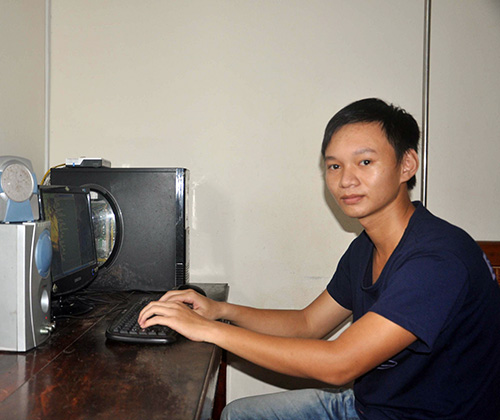

Lộc và những lựa chọn

Lần cập nhật cuối lúc Thứ năm, 22 Tháng 8 2013 10:29 Viết bởi Administrator Thứ năm, 22 Tháng 8 2013 09:16
Được 3 trường đại học lớn cùng lúc đề nghị tuyển thẳng nhưng cậu học trò lớp chuyên Tin trường THPT chuyên Nguyễn Bỉnh Khiêm - Trần Phước Lộc khước từ để “chinh phục” sự lựa chọn của chính mình: đăng ký thi đại học.
Ghi tên bảng vàng
Kết quả thi đỗ vào trường Đại học Bách khoa TP.Hồ Chí Minh với số điểm khá cao của Lộc không làm bạn bè ngạc nhiên. Bởi, Trần Phước Lộc là gương mặt sáng giá của trường THPT chuyên Nguyễn Bỉnh Khiêm trong năm học 2012 - 2013 với bảng thành tích vàng trong học tập. Năm học vừa qua, Lộc đoạt giải Ba tại Hội thi Tin học trẻ toàn tỉnh lần thứ XV, giải Nhất tại Kỳ thi Học sinh giỏi môn Tin học cấp tỉnh, cùng rất nhiều thành tích có tên và không tên về tin học trên mạng internet...
Nhưng sẽ chẳng có gì đáng nói nếu như không kể đến thành tích trong kỳ thi học sinh giỏi toàn quốc năm học 2012 - 2013. Không phụ lòng mong mỏi của gia đình, thầy cô và bè bạn, tại kỳ thi mà yêu cầu về chất xám có thể nói là khắt khe nhất đối với học trò giỏi tầm quốc gia, Phước Lộc đã ghi tên vào bảng vàng khi giành giải Ba (bộ môn Tin học còn có 2 giải khuyến khích) và là một trong 5 giải Ba của đoàn học sinh Quảng Nam (cùng với các môn Toán, Văn, tiếng Anh và Địa). Dù giải thưởng chưa cao nhưng so với các địa phương có truyền thống về chất lượng giảng dạy môn Tin học thì giải Ba học sinh giỏi quốc gia của Trần Phước Lộc là niềm tự hào của trường THPT chuyên Nguyễn Bỉnh Khiêm nói riêng, cả tỉnh nói chung.
Cùng với thành tích 12 năm liên tiếp đạt danh hiệu học sinh giỏi, hồ sơ của Trần Phước Lộc đã nhận được hồi đáp từ 3 trường đại học lớn trong cả nước: tuyển thẳng! Tạm để dành lời mời vào khoa Công nghệ thông tin của Đại học Bách khoa Đà Nẵng, Đại học Khoa học tự nhiên TP.Hồ Chí Minh và Học viện Công nghệ bưu chính viễn thông Hà Nội, Lộc vẫn ghi danh trở thành “sĩ tử” trong kỳ thi đại học căng thẳng như bạn bè. Kết quả không nằm ngoài dự đoán, Lộc đậu vào trường Đại học Bách khoa TP.Hồ Chí Minh với 24 điểm (môn Hóa 10 điểm, môn Toán, Lý đều 7 điểm).
Đứng trước quá nhiều sự lựa chọn chắc chắn không khỏi khiến cậu học trò 18 tuổi Trần Phước Lộc cảm thấy khó khăn. Dù vậy, chia sẻ về dự định sắp tới, Lộc dứt khoát : “Ước mơ của em là tiếp tục được học môn Tin học để trở thành kỹ sư công nghệ thông tin trong tương lai. Phía trước là 4 trường đại học lớn và em quyết định chọn nơi thi đậu là trường Đại học Bách khoa TP.Hồ Chí Minh để thực hiện mơ ước của mình”.
Học nhóm trên mạng
Con đường dẫn vào nhà Trần Phước Lộc ở khối phố 1 phường Trường Xuân (TP.Tam Kỳ) dù chưa hoàn thiện và ngoằn ngoèo nhưng khá dễ tìm. Do điều kiện công việc, ba mẹ tất bật tối ngày, Lộc phải tự chăm sóc bữa ăn cho mình và cậu em trai đang học THCS. Lộc tự nhận mình là người biết “quyết đoán” trong những sự chọn lựa. Từ việc học ngành nào cho đến chọn trường đại học để đăng ký dự thi đều do Lộc tự quyết định. Thường nghĩ thời buổi hiện nay những cô cậu học trò chuyên Tin sẽ có máy vi tính xách tay để tiện lợi cho việc học hằng ngày.
Thế nhưng Lộc vẫn “hai lúa” với máy tính để bàn dù điều kiện gia đình hoàn toàn có thể mua sắm cho. Như nhìn thấy sự băn khoăn của chúng tôi, Lộc nói ngay: “Kệ, máy ni được rồi vì chủ yếu là phục vụ việc học tập, hơn nữa em thấy cũng không cần thiết lắm. Mai mốt đi học đại học lúc đó hãy tính chuyện mua máy xách tay phục vụ cho học tập”.
Được hỏi về bí quyết giúp học tốt, Trần Phước Lộc bảo “chẳng có gì gọi là bí quyết cả”, ngoài việc hàng ngày cố gắng làm bài tập thật nhiều và tích cực trao đổi bài với các bạn. Theo lời Lộc, với đặc thù môn Tin học nên tối nào em cũng lên mạng học, đồng thời trao đổi bài với bạn học cùng lớp. Để giúp việc học nhanh và hiệu quả hơn, Lộc lập nhóm “4 thành viên” thường xuyên trao đổi với nhau trên mạng. Ban đầu, việc lập nhóm học trên mạng gây “hiểu lầm” từ phía phụ huynh. Lộc kể: “Lúc đầu ba mẹ tưởng em chơi game hay la cà trên mạng không lo chuyện học hành nên la mắng, cằn nhằn, kiểm soát kỹ càng lắm.
Sau đó, biết được việc học của em như vậy nên ba mẹ đã khuyến khích tụi em duy trì cách học theo nhóm trên mạng. Ngoài giờ học ra, em cũng dành cho mình khoảng thời gian xả hơi bằng cách chơi trò chơi giải trí trên mạng, tất nhiên đó cũng sẽ là những phần mềm cập nhật liên quan hỗ trợ cho việc học tập của tụi em”. Tuy nói chẳng có bí quyết nào để trở thành gương mặt sáng giá của nhà trường, nhưng Lộc đã chia sẻ rằng việc học nhóm, cùng trao đổi học tập với bạn bè trên mạng đã “làm sáng” cho Lộc rất nhiều ý tưởng. Và chắc chắn, cách học này sẽ tiếp tục cùng với Lộc trên con đường sinh viên ở phía trước. Có thể đó là bí quyết “học bạn” dễ dàng với bất kỳ ai.
XUÂN PHÚ
(Theo báo Quảng Nam)
Tin mới hơn:
- 08/12/2013 14:43 - Lịch kiểm tra học kỳ I năm học 2013-2014
- 05/12/2013 14:51 - Tổng hợp một số chuyên đề các môn chuyên của các t…
- 18/10/2013 09:26 - Đại hội đại biểu Đoàn TNCS Hồ Chí Minh trường THPT…
- 09/10/2013 13:58 - Kết quả thi chọn học sinh giỏi lớp 12 năm 2013-201…
- 22/08/2013 09:28 - Giao lưu cho những ngày sau
Tin cũ hơn:
- 04/07/2013 11:00 - DANH SÁCH TRÚNG TUYỂN VÀO TRƯỜNG THPT CHUYÊN NGUYỄ…
- 14/05/2013 21:24 - CÔNG ĐOÀN TRƯỜNG THPT CHUYÊN NGUYỄN BỈNH KHIÊM TH…
- 25/04/2013 09:13 - TRƯỜNG THPT CHUYÊN NGUYỄN BỈNH KHIÊM ĐẠT THÀNH TÍ…
- 08/04/2013 09:06 - HỌC SINH TRƯỜNG THPT CHUYÊN NGUYỄN BỈNH KHIÊM ĐẠT …
- 26/03/2013 09:05 - Tân Thạnh: Tổ chức giao hữu bóng đá